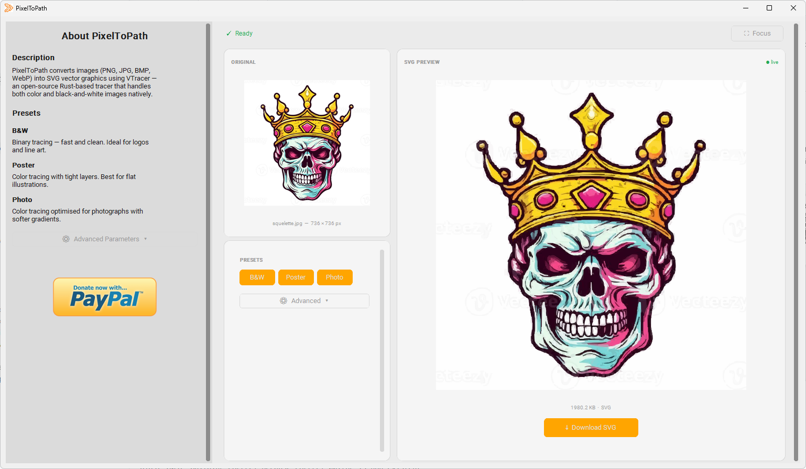

100 % Privat & Offline
Dina bilder lämnar aldrig din dator. Ingen uppladdning, ingen server, inget moln. PixelToPath körs helt på din lokala maskin - det säkraste sättet att konvertera känslig eller konfidentiell design.
PixelToPath är ett gratis skrivbordsverktyg med öppen källkod som förvandlar dina bitmappsbilder till ren, skalbar vektorgrafik - helt offline. Inga filuppladdningar, inga väntelistor, inga prenumerationsavgifter. Den enda PNG till SVG-konverteraren utan internet som du installerar en gång och äger för alltid.

Drivs av VTracer-teknologi • 100 % Öppen källkod • Sekretess Offline
Dina bilder lämnar aldrig din dator. Ingen uppladdning, ingen server, inget moln. PixelToPath körs helt på din lokala maskin - det säkraste sättet att konvertera känslig eller konfidentiell design.
Ingen uppladdning, ingen väntan, ingen serverkö. PixelToPath konverterar bilder på millisekunder med den kraftfulla VTracer-motorn direkt på din CPU.
Inga gränser på "3 gratis krediter per dag". Konvertera så många PNG-filer du vill, när du vill. Perfekt för satsvis bearbetning av tillgångar för webbutveckling eller grafisk design.
Vektorisering är avgörande för designers som behöver skala logotyper utan att förlora kvalitet. Så här använder du PixelToPath:
Den resulterande SVG-banan är kompatibel med Adobe Illustrator, Inkscape, Figma och webbläsare.
Gå med de 4 000+ användare som redan har laddat ner PixelToPath på GitHub och SourceForge.
Finns även på: SourceForge | GitHub Releases
Oavsett om du är en professionell designer eller en hobbyist passar PixelToPath sömlöst in i ditt arbetsflöde - särskilt när integritet och hastighet är avgörande.
Konvertera kundlogotyper, handritade skisser och rasterikoner till rena, skalbara SVG-filer. Du behöver inte lita på en tredjepartsserver med konfidentiella varumärkestillgångar. Arbeta offline i full hastighet, även utan Wi-Fi.
Satsvis konvertera PNG-ikonuppsättningar till SVG för dina webbprojekt. SVG-filer laddas snabbare, skalas perfekt på retinaskärmar och kan stiliseras med CSS. PixelToPath hanterar konverteringen omedelbart, så att du kan fokusera på att bygga.
Förbered konstverk för vinylskärare, lasergravörer och storformatsutskrifter. Dessa maskiner kräver vektorbanor, inte pixlar. PixelToPath konverterar din PNG-mall till en utskriftsklar SVG-fil på några sekunder.
Arbetar du med känsliga dokument, medicinska illustrationer, juridiska diagram eller proprietära ritningar? Onlinekonverterare laddar upp dina filer till fjärrservrar. PixelToPath är en PNG till SVG-konverterare utan uppladdning - dina filer stannar lokalt, alltid.
Använd PixelToPath i klassrum, labb eller på skoldatorer där internetåtkomst kan vara begränsad. Dess nollberoende, offline-första design gör den idealisk för utbildningsmiljöer på Windows eller Linux.
Integrera vektoriserade tillgångar i hårdvaruprojekt, inbäddade gränssnitt eller mikrokontrollerskärmar. SVG-banor som genereras av PixelToPath är rena, kompakta och redo för vidare bearbetning eller skriptning.
PixelToPath är också tillgängligt som ett gratis onlineverktyg - ingen installation krävs. Ladda upp din bild, justera inställningar och ladda ner din SVG på några sekunder från vilken enhet som helst.
Prova onlineverktyget →Samma kraftfulla motor - välj det format som passar ditt arbetsflöde.
Gratis
Konvertera bilder direkt i din webbläsare. Ingen installation, inget konto.
Öppna verktygetGratis & öppen källkod
Den fullständiga konverteraren på din maskin, för Windows & Linux.
Ladda ner gratis39 € engångskostnad
Bevakad mapp, masskonvertering och CLI för tunga arbetsbelastningar.
Skaffa ProGratis nivå + kreditpaket
Ett REST-anrop: skicka en bild, få en ren SVG. 10 gratis/månad.
Skaffa en API-nyckelJämför alla versioner & priser →
Har du redan ett konto? Logga in på kundportalen →
PixelToPath erbjuder också en gratis onlineversion - men om du behöver maximal sekretess, snabbhet eller arbete utan internet är skrivbordsappen rätt val.
| Funktion | PixelToPath Skrivbord | Andra onlineverktyg |
|---|---|---|
| Fungerar offline | ✅ Ja - inget internet krävs | ❌ Nej - kräver internet |
| Filsekretess | ✅ Filer lämnar aldrig din enhet | ❌ Filer laddas upp till fjärrservrar |
| Konverteringsgränser | ✅ Obegränsat | ❌ Ofta 3-5 gratis/dag |
| Hastighet | ✅ Millisekunder (lokal CPU) | ⚠️ Beror på serverbelastning |
| Prenumeration krävs | ✅ Aldrig | ❌ Ofta betalvägg för full kvalitet |
| Öppen källkod | ✅ MIT-licens | ❌ Proprietär |
| Filstorleksgräns | ✅ Ingen | ❌ Ofta begränsat till 5-10 MB |
PNG (Portable Network Graphics) är ett rasterbildsformat. Det lagrar bilder som ett fast rutnät av pixlar. När du zoomar in eller skriver ut en PNG i stor storlek kommer du att märka att bilden blir suddig eller pixlig. PNG-filer är utmärkta för fotografier, skärmdumpar och webbgrafik i fast storlek - men de skalas inte.
SVG (Scalable Vector Graphics) är ett vektorbildsformat. Istället för pixlar beskriver det former med hjälp av matematiska banor och koordinater. En SVG-logotyp kan visas i 10px eller 10 meter med perfekt skärpa. SVG-filer är också mindre i storlek, redigerbara i kod och kan stiliseras med CSS - vilket gör dem idealiska för logotyper, ikoner och illustrationer.
Vektorisering är processen att konvertera en rasterbild (som en PNG) till en vektorfil (som en SVG). PixelToPath använder VTracer-motorn för att spåra formerna och färgerna i din bild och generera mjuka, skalbara SVG-banor. Detta är viktigt när du behöver ändra storlek på en logotyp utan att förlora kvalitet, eller förbereda konstverk för en laserskärare eller screentryckare.
Ja. PixelToPath är en helt offline PNG till SVG-konverterare. När den väl är installerad krävs noll internetanslutning för att fungera. Detta gör den idealisk för användning i begränsade miljöer, på flyg, eller var som helst där Wi-Fi är otillgängligt.
Helt gratis. PixelToPath är mjukvara med öppen källkod släppt under MIT-licensen. Det finns inga konverteringsgränser, inga vattenstämplar på exporterade SVG-filer och inga prenumerationer. Du kan konvertera så många filer du vill, för alltid - och om du behöver bevakade mappar, masskonvertering eller ett CLI finns PixelToPath Pro för det.
Ja - detta är en av PixelToPaths största fördelar. Eftersom den körs helt på din lokala maskin laddas dina filer aldrig upp till någon server. Detta gör den till det säkraste valet för att konvertera konfidentiella logotyper, juridiska dokument, medicinska illustrationer eller annan proprietär konst.
De exporterade SVG-filerna är helt standardiserade och kompatibla med Adobe Illustrator, Inkscape, Figma, Affinity Designer, CorelDRAW, alla moderna webbläsare (Chrome, Firefox, Safari, Edge) och alla andra applikationer som stöder SVG-formatet.
PixelToPath är för närvarande tillgängligt för Windows (64-bitars) och Linux. Stöd för macOS kan komma att läggas till i en framtida utgåva. Kolla GitHub-arkivet för de senaste uppdateringarna.
VTracer är en modern vektoriseringsmotor med öppen källkod skriven i Rust. Till skillnad från äldre verktyg som bara hanterar svartvita bilder stöder VTracer naturligt fullfärgsvektorisering med hjälp av en algoritm för klustring i flera lager. Den producerar rena, kompakta SVG-banor och är betydligt snabbare än traditionella bitmappsspårare. PixelToPath ger ett användarvänligt gränssnitt ovanpå VTracer så att vem som helst kan använda den utan färdigheter i kommandoraden.
Ja. Till skillnad från onlineverktyg som begränsar dig till ett fåtal gratis konverteringar per dag har PixelToPath inga gränser. Du kan konvertera hundratals eller tusentals PNG-filer utan några begränsningar - en konvertering i taget. För att köa hundratals bilder i en enda automatiserad körning lägger PixelToPath Pro till satsvis konvertering, bevakade mappar och ett CLI.
PixelToPath är gratis att använda. Om detta verktyg hjälpte dig att spara tid, överväg att bjuda mig på en kaffe.
❤️ Donera på Ko-fi